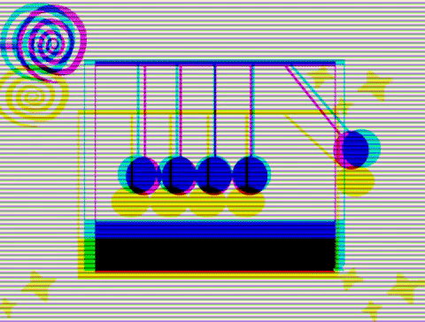

引述
关于碰撞问题，可以说是一个经典物理学中已经被解释得通透的情景。
我将不注重讨论问题的细节，只记录一个很久之前就在脑海中成型的想法。
（以下考虑理想弹性碰撞）
由动能和动量两大守恒原理，得
很容易得到
两式是对称的。
等价变换
上述求解公式可以等价变换为
- 记$M$为系统质量
- 记$\lambda_i为m_i$的相对质量系数（无量纲）
- 记$\overline{v_i}$为相对速度
最终我们得到了新的公式表达：
$(F)$式的含义可以表述为
拓展
注意：
- 两物体的相对速度和为0（矢量）
- 两物体的相对质量系数和为2
- 根据上面的恒等关系，你只需要先求一个物体的相对量，就能快速得到另一个物体的相对量。
由于$0<\lambda_i\leq2，\overline{v_i}\geq0$，碰撞的速度变化总在相对速度的2倍以内。
$\lambda_i\overline{v_i}$表征了物体相互之间的速度影响项。
应用
例：

求A的相对速度为+3，相对质量系数为2*2/3=4/3。
- 快速得到：B的相对速度为-3，相对质量系数为2-4/3=2/3。
代入公式：
验证：结果显然满足动能、动量守恒
猜想:虚体运动
文章最前面的配图是牛顿球。
这实际上是一个能量的传递过程。
那么问题来了。
【虚体运动猜想】：
- 是否可以认为有一个虚拟的球(能量)在这些表面现象的背后作用呢？

Source: CSS牛顿摆
（绘图技术太渣，意会一下就好，大概是一个虚拟的球先附着在左边的球上，碰撞发生以后，它脱离实体潜运行最右侧的球上，然后继续附着，周而复始）
这样的话，相对物质实体，能量就是在场中运行的虚体了。